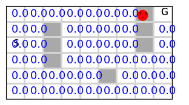
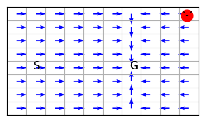

Lesson 5- Dynamic Programming: Model-Based Approach
Unit 2: Learning Outcomes
By the end of this unit, you will be able to:
- Compute the value function for a given policy in tabular settings.
- Implement control methods that infer an agent’s policy from an action-value function.
- Explain the concept of Generalized Policy Iteration (GPI) and how it underpins many RL methods.
- Compare full-backup action-value-based control methods with direct policy estimation control methods.
- Evaluate how Monte Carlo (MC) methods provide unbiased but high-variance estimates through interaction with the environment.
- Analyze how REINFORCE achieves unbiased but high-variance policy gradient estimation through interaction with the environment.
In the first lesson, you looked at a basic RL problem, the k-arm bandit, which involves only actions and no states (non-associative problem). In general, in RL, we are faced with different situations, and we need to take different actions in each situation in order to achieve a certain goal. This general type of environment with states and actions imposes a different flavour to the solution we can design. From now on, we will tackle associative problems. For associative problems, there are two approaches:
- Model-based approach
- Model-free approach
In this lesson, we will take the first approach. We will learn how to use a model of the environment to solve an RL problem. The model is given in the form of the dynamics of the environment. These usually come in the form of 4 dimensions of conditional probability involving an answer to the following question: what is the probability of obtaining a certain reward r in a certain state s' given that the agent was previously in a state s and applied action a.
We will assume that there is already a model for the environment and try to take advantage of this model to come up with the best policy. Nevertheless, we will see simple ways to build such models and come back to this question later when we tackle planning algorithms in RL.
Plan As usual, in general there are two types of RL problems that we will attempt to design methods to deal with 1. Prediction problem For These problems we will design Policy Evaluation Methods that attempt to find the best estimate for the value-function given a policy.
- Control problems For These problems we will design Value Iteration methods which utilise the idea of Generalised Policy Iteration. They attempt to find the best policy, via estimating an action-value function for a current policy then moving to a better and improved policy by choosing a greedy action often.
Basics Dynamic Programming
Policy Evaluation and Value Iteration
Inducing the dynamics by interacting with the environment
We cover obtaining the dynamics from an actual environment. We will use mainly the random walk environment and the grid world environment and generate their dynamics. These are deterministic simple environments. Nevertheless, they are very useful to demonstrate the ideas of RL.
Note that when we move to the real world the dynamics become much more complex and building or obtaining the dynamic becomes impractical in most cases. Therefore, towards that end instead of dealing directly with the environment's dynamics, we will see later how we can substitute this requirement by having to interact with the environment to gain experience which will help us infer a good estimate of the expected value function (discounted sum of rewards) which in turn will help us to infer a close to optimal policy for the task in hand.
The exercise of dealing with probabilities and then using them in designing a Dynamic Programming solution is valuable since most of the other solutions utilise the basic ideas (policy iteration, value iteration algorithms and policy improvements theorem) that we cover here and will mainly show us that we can devise a form of Bellman equation that is suitable for interaction, where we use sampling, model-free algorithms instead of using probabilities(dynamics), model-based algorithms.
Dynamic programming suffers from what Bellman described as the curse of dimensionality which indicates that the computational resources required to solve a problem grow exponentially with the dimensionality of the problem. So in our case, the dimensionality is the number of states (as well as actions and rewards). So for example if the dynamic programming solution computational complexity is \(2^{|S|}\) and the number of states \(|S|=10\) then it costs \(2^{10}=1024\) but when the number of states \(|S|\) grows to 100 the cost becomes \(2^{100}=1267650600228229401496703205376\).
Sources Stochasticity- Dynamics and Policy
One important point to make is that stochasticity comes from different elements of the MDP and from the policy itself.
- There might be stochasticity in the dynamics at the state transition level, where applying action \(a\) in a state \(s\) may cause the agent to transition to different states, each with a different probability
-
There might be stochasticity in the dynamics at the reward level, where applying action \(a\) in a state \(s\) may result in different rewards, each with a certain probability
-
There might be stochasticity in the policy itself, where the policy applies different actions in a state \(s\) with different probabilities
-
There might be stochasticity or randomness in observing the current state due to the complexity of the state space. For example, when a robot moves around in the environment, after a while, we cannot reliably designate its position from its motor encoders even when we know the start position due to dead-reckoning. This is called partial observability, and there is a framework called BOMDP or partially observable MDP to tackle this problem. However, we will not study this branch. The field is divided about the necessity of BOMDP with a line of thought that considers that we can overcome this difficulty by encoding our states differently but staying in the MDP framework.
These sources of stochasticity dictate using suitable techniques to obtain the dynamics and to evaluate or improve stochastic and deterministic policy.
Some environments might allow the agent to jump over some obstacles or simply skip cells. For these, we define slightly altered dynamics to take the jumps into account. Below we show the definition.
def dynamics(env=randwalk(), stoch=False, show=False, repeat=1000): # , maxjump=1
rewards = env.rewards_set()
nS, nA, nR = env.nS, env.nA, rewards.shape[0]
p = np.zeros((nS,nR, nS,nA))
randjump = env.randjump
env.randjump = False # so that probability of all intermed. jumps is correctly calculated
for i in trange(repeat if stoch else 1): # in case the env is stochastic (non-deterministic)
for s in range(nS):
if s in env.goals: continue # uncomment to explicitly make pr of terminal states=0
for a in range(nA):
for jump in (range(1,env.jump+1) if randjump else [env.jump]):
if not i and show: env.render() # render the first repetition only
env.s = s
env.jump = jump
rn = env.step(a)[1]
sn = env.s
rn_ = np.where(rewards==rn)[0][0] # get reward index we need to update
p[sn,rn_, s,a] +=1
env.randjump = randjump
# making sure that it is a conditional probability that satisfies Bayes rule
for s in range(nS):
for a in range(nA):
sm=p[:,:, s,a].sum()
if sm: p[:,:, s,a] /= sm
return p
Dynamic Programming Methods
Ok so we are ready now to move to Dynamic programming algorithms to solve the RL problem of finding a best estimate of a value function and or finding an optimal policy.
Policy evaluation
The first step to improving any policy is to evaluate how good or bad the policy is for the given task. This fundamental question can be addressed by tying up the task with a reward function that basically rewards the agent for achieving the task or a subtask that leads to the final goal. The agent's aim then becomes to collect as many rewards as possible (or to incur as few losses as possible), which should help the agent achieve the given task. One example is when a robot is moving in an environment, and we want it to reach a specific location, then we can reward/punish the robot for each step that is taking it close to the goal or away from it. But this awareness of the goal location is usually difficult to attain in real environments. Hence it is replaced by rewarding the agent when it reaches the goal or punishing the agent for each step taken without reaching the goal location.
We can devise an evaluation strategy based on the discounted sum of rewards the agent is expected to collect while executing the task. The strategy depends on the dynamics of the environment. You may want to read section 4.1 and come back here to continue reading the code for the policy evaluation algorithm to get an insight into how it works.
def Policy_evaluation(env=randwalk(), p=None, V0=None, π=None, γ=.99, θ=1e-3, show=False):
# env parameters
nS, nA, nR, rewards = env.nS, env.nA, env.nR, env.rewards_set()
p = dynamics(env) if p is None else np.array(p)
# policy parameters
V = np.zeros(nS) if V0 is None else np.array(V0); V[env.goals] = 0 # initial state values
π = np.zeros(nS,int) if π is None else np.array(π) # policy to be evaluated **stochastic/deterministic**
i=0
# policy evaluation --------------------------------------------------------------
while True:
Δ = 0
i+= 1
# show indication to keep us informed
if show: clear_output(wait=True); rng = trange(nS) #
else: rng = range(nS)
for s in rng:
if s in env.goals: continue # only S not S+
v, V[s] = V[s], 0
for sn in range(nS): # S+
for rn_, rn in enumerate(rewards): # get the next reward rn and its index rn_
if π.ndim == 1: # deterministic policy
V[s] += p[sn,rn_, s,π[s]]*(rn + γ*V[sn])
else: # stochastic policy
V[s] += sum(π[s,a]*p[sn,rn_, s,a]*(rn + γ*V[sn]) for a in range(nA))
Δ = max(Δ, abs(v-V[s]))
if Δ<θ: break
if show:
env.render(underhood='V', V=V)
print('policy evaluation stopped @ iteration %d:'%i)
return V
Note that we assume that when the policy is deterministic, it takes the shape (nS,) and its entries are actions ex. π[s]=1 means take right(1) when in state s.
On the other hand if the policy is probabilistic, it has a shape of (nS, nA) and its entries are probabilities of each action given a state s, i.e π[a|s] written as π[s,a] in the code.
Note that \(\gamma\) must be \(< 1\) to guarantee convergence of the Bellman equation because, in general, we do not know whether the policy guarantees reaching a terminal(goal) state; if we do, then \(\gamma=1\) is ok.
Refer to section 4.1 in the book: 'The existence and uniqueness of \(v_\pi\) guaranteed as long as either \(\gamma< 1\) or eventual termination is guaranteed from all states under the policy \(\pi\)'.
This condition can be relaxed when we move to sampling instead of dynamic programming in the next consequent lessons.
Policy Evaluation for 2d MDP Grid World
Let us test our policy evaluation algorithm on the following simple 3x3 grid world
env3x3 = Grid(gridsize=[3, 3], s0=0, goals=[8], figsize=[10,1])
π = [3, 1, 3, 1, 1, 3, 2, 2, -1] # guarantee to reach the terminal state hence γ=1 is ok
π_ = [3, 0, 0, 1, 2, 0, 0, 0, -1] # no way to terminal state hence γ=1 leads to an infinite loop
env3x3.render(underhood='π', π=π)

V0 = [.6, .5, .5, .2, .1, .2, .1, .5, 0]
V = Policy_evaluation(env=env3x3, π=π, V0=V0, γ=.9, show=True)
env3x3.render(underhood='V', V=V)
env = maze()
π = np.ones(env.nS, dtype=np.uint32)*3 # always go up
V = Policy_evaluation(env=env, π=π, show=True)

policy evaluation stopped @ iteration 6:
As we can see moving up yeild some benefits mainly in the cells that lead to the goal.
Let us now generate a random policy and evaluate it for a maze environment.
env = maze()
π = np.random.randint(env.nA, size=env.nS, dtype=np.uint32)
V = Policy_evaluation(env=env, π=π, show=True)
 policy evaluation stopped @ iteration 1:
As we can see, the randomly generated policy is chaotic and carry little value for the agent. However, evaluating different policies is highly important for an agent since it can guide the improvement of its adopted policy (based on this ability). One example is to keep evaluating random policies until some computational resources are consumed and pick the best. Below we show such a strategy of searching for an optimal policy. You can apply all other search algorithms that you have come across before in conventional AI (breadth-first etc.).
env = maze()
Vmax= np.zeros((env.nS))
p = dynamics(env)
print('Vmax before search', Vmax.sum())
Vmax before search 0.0
import random
random.seed(0)
np.random.seed(0)
for _ in trange(1000):
# π = np.random.randint(env.nA, size=env.nS)
π = choices(range(env.nA), k=env.nS)
V = Policy_evaluation(env=env, π=π, p=p, show=False)
if V.sum() > Vmax.sum():
Vmax = V
πmax = π
env.render(underhood='π', π=πmax)
print('Vmax after search', Vmax.sum())

Vmax after search 10.704460219301
As we can see, finding the optimal policy by random search is difficult since the space of policies is huge, making exhaustive or random search infeasible (dimensionality problem). We need a way to take and maintain a step in the right direction of improving the policy. As you have already seen in another module, a greedy search can often lead to a good result. The next section shows a simple but effective strategy to gradually improve a policy by taking a greedy step towards the solution.
Policy Iteration
Now that we know how to evaluate a policy, it is time to improve it. Policy iteration is a basic and simple algorithm. It explicitly and iteratively tries first to reach a highly accurate estimate of the value function of the current policy, then it tries to improve the policy by maximising the probability of greedy actions as per the current value function. Evaluating the current policy fully and then improving it via policy iteration is inefficient, but it shows the fundamental ideas behind reinforcement learning. Please spend some time comprehending the code and reading the corresponding section 4.3 in the book.
def Policy_iteration(env=randwalk(), p=None, V0=None, π0=None, γ=.99, θ=1e-3, show=False, epochs=None):
# env parameters
nS, nA, nR, rewards = env.nS, env.nA, env.nR, env.rewards_set()
p = dynamics(env) if p is None else np.array(p)
# policy parameters
V = np.zeros(nS) if V0 is None else np.array(V0); V[env.goals] = 0 # initial state values
π = np.zeros(nS,int) if π0 is None else np.array(π0); # initial **deterministic** policy
Q = np.zeros((nS,nA)) # state action values storage
# π = randint(0,nA,nS)
j=0
while True if epochs is None else j<epochs:
j+=1
# 1. Policy evaluation---------------------------------------------------
i=0
while True if epochs is None else i<epochs:
Δ = 0
i+= 1
for s in range(nS):
if s in env.goals: continue # S not S+
v, V[s] = V[s], 0
for sn in range(nS): # S+
for rn_, rn in enumerate(rewards): # get the reward rn and its index rn_
V[s] += p[sn,rn_, s, π[s]]*(rn + γ*V[sn])
Δ = max(Δ, abs(v-V[s]))
if Δ<θ: print('policy evaluation stopped @ iteration %d:'%i); break
# 2. Policy improvement----------------------------------------------------
policy_stable=True
for s in range(nS):
if s in env.goals: continue # S not S+
πs = π[s]
for a in range(nA):
Q[s,a]=0
for sn in range(nS): # S+
for rn_, rn in enumerate(rewards): # get the reward rn and its index rn_
Q[s,a] += p[sn,rn_, s,a]*(rn + γ*V[sn])
π[s] = Q[s].argmax() # simple greedy step
if π[s]!=πs: policy_stable=False
if policy_stable: print('policy improvement stopped @ iteration %d:'%j); break
if show: env.render(underhood='π', π=π)
return π, Q
We can now apply policy iteration to a proper Environments. We start by a random walk and then we move into grid world.
2-d Grid World MDP Examples
Let us try it on a slightly complex environment such as the maze.
env=maze()
π = Policy_iteration(env, show=True)[0]

policy evaluation stopped @ iteration 2:
policy improvement stopped @ iteration 16:
Value Iteration Algorithm
Our final step to fully develop the ideas of dynamic programming is to shorten the time it takes for a policy to be evaluated and improved. One simple idea we will follow here is to slightly improve the evaluation and immediately improve the policy. We do these two steps iteratively until our policy has stopped to improve. This is a very effective strategy because we do not wait until the policy is fully evaluated to improve it; we weave and interleave the two loops together in one loop. Below we show this algorithm. Read section 4.4 to further your understanding of this algorithm.
def value_iteration(env=randwalk(), p=None, V0=None, γ=.99, θ=1e-4, epochs=None, show=False):
# env parameters
nS, nA, nR, rewards, i = env.nS, env.nA, env.nR, env.rewards_set(), 0
p = dynamics(env) if p is None else np.array(p)
# policy parameters
V = np.zeros(nS) if V0 is None else np.array(V0); V[env.goals] = 0 # initial state values
Q = np.zeros((nS,nA)) # state action values storage
while True if epochs is None else i<epochs:
Δ = 0
i+= 1
for s in range(nS):
if s in env.goals: continue
v, Q[s] = V[s], 0
for a in range(nA):
for sn in range(nS):
for rn_, rn in enumerate(rewards): # get the reward rn and its index rn_
Q[s,a] += p[sn,rn_, s,a]*(rn + γ*V[sn]) # max operation is embedded now in the evaluation
V[s] = Q[s].max() # step which made the algorithm more concise
Δ = max(Δ, abs(v-V[s]))
if Δ<θ: print('loop stopped @ iteration: %d , Δ = %2.f'% (i, Δ)); break
if show: env.render(underhood='π', π=Q.argmax(1))
return Q
Value Iteration on a Grid World
Now that you understand the value-iteration algorithm, you can apply it on a different and more complex envornment such as the grid worlds.
Let us try on a grid environment.
env=grid()
Q = value_iteration(env=env, show=True)
print('optimal action for state', Q.argmax(1))

loop stopped @ iteration: 10 , Δ = 0
optimal action for state [1 1 1 1 1 1 3 0 0 0 1 1 1 1 1 1 3 0 0 0 1 1 1 1 1 1 3 0 0 0 1 1 1 1 1 1 0
0 0 0 1 1 1 1 1 1 2 0 0 0 1 1 1 1 1 1 2 0 0 0 1 1 1 1 1 1 2 0 0 0 1 1 1 1
1 1 2 0 0 0]
To interpret the policy we provided you with a useful function to render the environemt with its policy as shown above.
As we can see the policy-iteration algorithm successfuly gave us the best policy for this simple environment.
Value Iteration on a Windy Grid World
Below we show the results of applying the value iteration method on a windy grid world. This is almost identical to the previous simple grid world without any obstacles, the only difference is that there is a wind blowing upwards, which shifts the agent 2 or 1 cell depending on its location. See page 130 of the book.
env=windy()
Q = value_iteration(env, show=True)

Let us now apply the policy-iteration on the maze env.
env=maze()
policy = value_iteration(env, show=True)
# print('optimal action for state', policy)

loop stopped @ iteration: 14 , Δ = 0
Conclusion
In this lesson, we covered the main dynamic programming algorithms. We saw how evaluating a policy was extremely useful in being the key component to allowing us to improve the policy. We then developed a policy iteration algorithm which improves the policy in two main steps: 1. a step that evaluates the policy fully to reach an accurate estimation of the action values of the current policy 2. a step that improves the policy by adopting a greedy action. The usage of an action-value function Q(s,a) was key in allowing us to choose between actions since the state-value function V(s) does not differentiate between the values of actions
We finally saw how the value-iteration algorithm has a similar structure to the policy-iteration algorithm with one important difference; it can arrive at an optimal policy by just taking a step towards the optimal policy by slightly refines its estimation of the action-value function without fully evaluating it. Hence, it improves its policy more concisely and with much less overhead than the full policy iteration method.
In the next lesson, we will take a different approach and move to cover sampling methods that do not use the dynamics of the environment explicitly and instead try to improve its policy by interacting with the environment.
Reading: For further reading you can consult chapter 4 from the Sutton and Barto book.
Your turn
Now it is time to experiemnt further and interact with code in worksheet5.